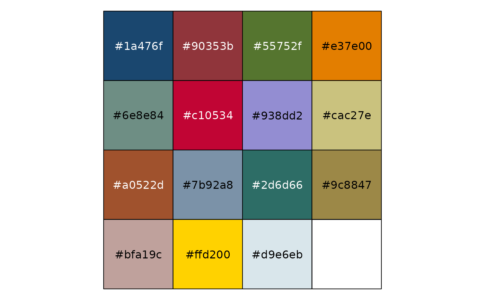
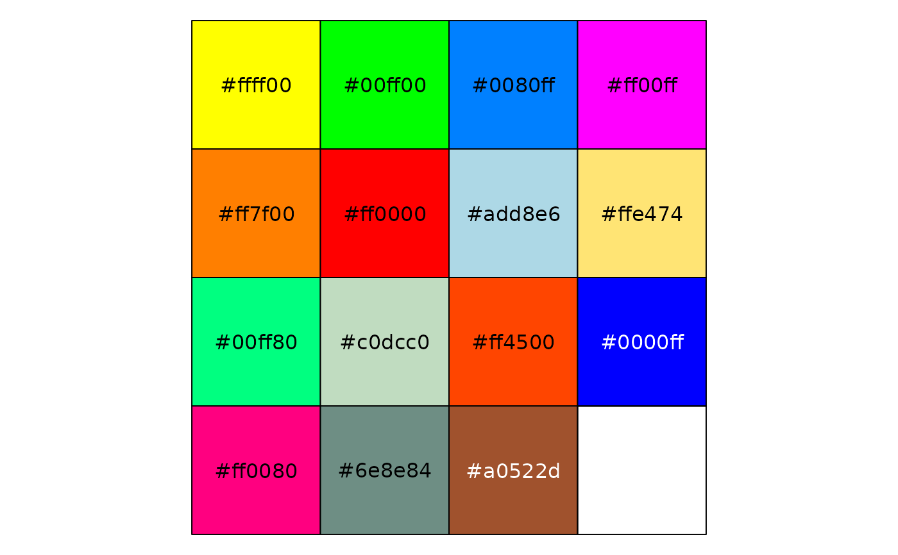
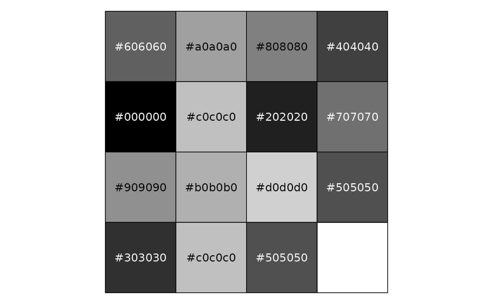

Stata color palettes. See Stata documentation for a description of the schemes, https://www.stata.com/help.cgi?schemes.
Details
All these palettes support up to 15 values.
Stata's palettes come in two generations, and both are included here.
- Stata 17 and earlier
Schemes
"s2color","s1color","s1rcolor", and"mono"are built from Stata's classic named colors (navy,maroon,forest_green, and so on) and thegs0–gs16gray scale."s2color"was Stata's factory default through Stata 17.- Stata 18 and later
Scheme
"stcolor"uses thestc1–stc15colors introduced in Stata 18. They are brighter than the classic palette and chosen to stay distinguishable for readers with a color vision deficiency. The first four are also available under the aliasesstblue,stred,stgreen, andstyellow."stcolor"has been Stata's factory default since Stata 18.
"economist" is not one of Stata's general-purpose schemes; it is the
set of Economist-styled colors that Stata ships in
scheme-economist.scheme.
Examples
library("scales")
# Stata 18 and later (the current factory default)
show_col(stata_pal("stcolor")(15))
 # Stata 17 and earlier
show_col(stata_pal("s2color")(15))
# Stata 17 and earlier
show_col(stata_pal("s2color")(15))

show_col(stata_pal("s1rcolor")(15))

show_col(stata_pal("s1color")(15))
 show_col(stata_pal("mono")(15))
show_col(stata_pal("mono")(15))
